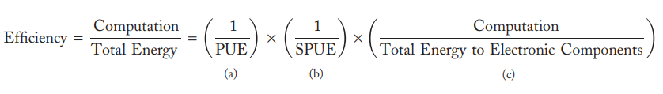
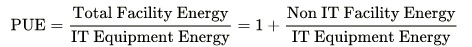
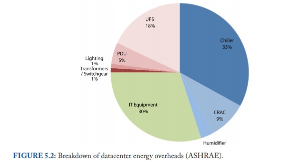

Energy efficiency of a WSC is broadly defined as the amount of computational work performed divided by the total energy used in the process. If we use an equation to represent the efficiency of a datacenter, it can be factored into three components:
(Source:[1])
PUE:
The Power Usage Effectiveness reflects how efficiently a datacenter uses energy, especially, the power consumed by the actual computing equipment like servers, network equipment, etc. It can also be calculated using this formula:
(Source:[2])
Sadly, the PUE of the average datacenter is very poor at the moment. 85% of current datacenters were estimated to have a PUE of greater than 3.0(which means the building’s mechanical and electrical systems consume twice as much power as the actual computing load), while a well-designed datacenter should have a PUE of less than 2[1].
High PUE values are due to multiple sources of overhead, and it is mostly caused by a historical lack of attention to efficiency imposed by physics.
Term (b) SPUE (server PUE) is used to represent the ratio of total server input power to its useful power, where useful power includes only the power consumed by the electronic components directly involved in the computation / useful power excludes all losses in power supplies, VRMs (voltage regulator modules), and fans. The current common value is around 1.6 to 1.8.
The combination of PUE and SPUE (TPUE = PUE * SPUE) therefore constitutes an accurate assessment of the joint efficiency of the total electromechanical overheads in facilities and computing equipment. [1]
(Source:[1])
Sources of energy losses:
1. Most of the efficiency losses are encountered on the chiller.
2. The uninterruptible power supply (UPS) is the source of most conversion losses
3. Power Distribution Unit (PDU)[3] : a device for controlling electrical power in a datacenter.
4. Two stepping-down transformers (115kV -> 13.2kV -> 480V in the US) are fairly efficient (transformation losses typically are below half a percentage)
5. A fair amount of power (1–3%) can be lost bringing low-voltage power (110 or 220 V) to the racks if the respective cables are long.
How do we improve the power efficiency?
1. Review the datacenter operating temperature. Instead of the traditional setting of 20°C, set the CRAC to around 24~27°C to use less cooling so less energy is needed. [4]
2. Use water cooling - Water conducts heat far better than air, so water is much more efficient as a cooling medium.
3. Careful airflow handling – do not allow hot air to mix with cold air
4. Per-server 12-V DC UPS. Each server contains a mini-UPS, and these per-server UPSs eliminate the need for a facility-wide UPS, increasing the efficiency of the overall power infrastructure[1]
How does the load effects the efficiency?
In cloud computing environment, the allocation of different tasks to VMs is known as the load.[5] From the research, we realize that servers spend relatively little aggregate time at high load levels, and individual servers in these systems also spend little time completely idle. Hence, how to efficiently allocate workload to different servers is an important area that we can look into.
Ideally, energy-proportional systems will consume almost no power when idle and gradually consume more power as the activity level increases, in another word, if you use a graph to represent the relation, it should be a linear line. Such linear relationship would make energy efficiency uniform across the activity range, rather than decaying with decreases in activity levels. Hence, energy-proportional machines have dynamic power ranges.
Improvements can be done on some hardware Scomponents. For example, disk drives. It wasted a large fraction of its energy just to keep the platters spinning. If we can choose a disk with lower rotational speed and multiple heads, more energy can be saved for sure.
The role of software in energy proportionality:
As we've discussed before, hardware does play an important role in energy efficiency. However, better power management and scheduling software infrastructure can be very helpful as well. For example, intelligent use of power management features, using low-overhead inactive or active low-power modes, as well as implementing power friendly scheduling of tasks can all make better use of energy of hardware systems.[1][6]
Conclusion:
Energy efficiency is a key cost driver for WSCs, and we expect energy usage to become an increasingly important factor of WSC design.